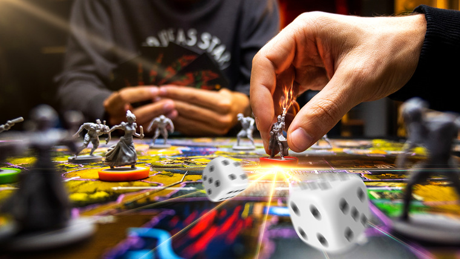

Настольные игры

Все, кто меня знает, наверняка знают, что я очень люблю настольные игры, и, рискуя показаться элитарным,
я не имею в виду "Монополию".
Я решил поделиться с вами тем, почему я считаю, что в настольных играх есть нечто большее и почему они могут
быть полезны в рабочей среде.
Для этого давайте вкратце рассмотрим историю игр:
Настольные игры или похожие на них игры имеют очень древнюю историю:
Предшественники шахмат восходят к древней Индии, примерно 250-300 гг. н.э.
Но в Древнем Египте были найдены игры, датируемые 3500 г. до н.э. и более.
Более свежей историей может быть разработка кригшпиля в 1812 году в качестве
тренировки для прусской армии, что позволило Уэллсу опубликовать "Напольные игры"
и "Маленькие войны" как первые правила варгеймов в коммерческой форме в 1911 и 193 годах,
которые являются предшественниками пресловутых "Подземелий и драконов" Гэри Гайгэкса.
Пока я не утомил вас до смерти, давайте после этого очень краткого обзора продолжим о
социальных реализациях. Настольная игра как детская игрушка на самом деле является довольно новым явлением,
так как раньше они были формой развлечения до того, как все могли позволить себе книги или появился
телевизор. Существует множество различных типов и подтипов настольных игр, начиная от собственно настольных
игр, ролевых игр на бумаге и пером, простых игр с кубиками и картами, и заканчивая так называемыми
настольными играми. Все они имеют различные подвиды, которые могут вызывать бурные дискуссии в Интернете.
Во всех этих играх всегда есть некий шанс и некий способ реализации стратегии. Что, наконец, приводит к
моему первому пункту интереса: они дают вам определенный набор правил и, поскольку в них играют другие люди,
психологический фактор и фактор сопереживания. Все это влияет на цель игры, которая в основном заключается в
победе. Итак, вы получаете определенный набор правил и определенный набор законов природы, в которых вы
должны найти решение или способ выиграть игру.
Что довольно очевидно - это просто представление о жизни как таковой. Это также рисует довольно хорошую
картину вашей повседневной рабочей жизни. Здесь, смею заметить, не имеет значения, какая у вас работа,
почти на каждой работе вы сталкиваетесь с трудностями и вынуждены придерживаться политики компании, правил
рынка, законов, и у вас есть определенный набор или наборы инструментов, которые вы используете в своей
работе.
Вы спросите, зачем мне делать то же самое, что я делаю каждый день? Ну, дело в том, что вы используете
другой набор правил, и выигрывать, возможно, будет легче.
Но действительно интересный момент заключается в том, что вы получаете возможность взаимодействовать со
своими коллегами или друзьями в соревновательной и веселой манере вне вашей повседневной работы, что может
дать вам представление о том, как они функционируют, и вы обязательно будете вести светские беседы во время
веселья.
Таким образом, укрепляются отношения внутри вашей команды или компании, и вы также можете привлечь новых
людей из других команд или частей вашей компании.
Также вы должны отведать пиццу. Не спрашивайте почему, но это традиционная еда. Вы должны ее съесть.
Как же начать? Лучший способ - если у вас есть коллега или сотрудник, увлекающийся настольными играми, есть
шанс, что он или она с радостью спрячет часть своей коллекции на работе, эффективно скрывая ее от своей
второй половинки.
Но шутки в сторону, лучшим способом будет попросить кого-нибудь принести несколько настольных игр, с
которыми можно познакомиться. Вы можете пойти и спросить в местном магазине игр, практически в каждом городе
есть хотя бы один, могут ли они принести несколько игр в один из вечеров и познакомить вас с ними. Есть
много забавных игр с простыми правилами, творческих игр, в которые могут играть несколько игроков. Например,
в "Картинке" мы играем в "Зомби!!!", правила на самом деле состоят из 10 предложений и довольно просты и
понятны. Цена - около 20 долларов США или евро.
Что подводит нас к очень важному вопросу стоимости. Настольные игры могут быть удивительно дешевыми, даже
самые дорогие, если учесть, сколько времени вы будете их использовать, и разделить это на количество людей.
Так что, допустим, вы потратите 100 долларов на игру, в которую могут играть 6 игроков, вы будете играть в
нее 2 часа и делать это пару раз в год, скажем, каждые два месяца, это 6 x 6 человек, каждый раз по два часа
веселья. Таким образом, в итоге вы получаете коэффициент затрат 100/72 в час на человека, что примерно равно
1.25 U$. Таким образом, у вас останется достаточно денег на пиццу и напитки. Теперь это немного дешевле, чем
во время последнего командного упражнения, не так ли?
Итак, теперь вы нашли дешевый и веселый способ сплочения команды и оттачивания социальных навыков, в то же
время оттачивая аналитическое и логическое мышление, даже обучая своих коллег. Теперь вам осталось только
купить несколько игр, заказать пиццу и запереть своих коллег в офисе вместе с вами.
Пожалуйста, не стесняйтесь комментировать или давать мне отзывы, если у вас есть вопросы или вы хотите
получить советы по созданию собственной группы.
Источник тескста - https://www.linkedin.com/pulse/why-boardgames-great-frederik-wunderlich
Переведено с помощью www.DeepL.com/Translator (бесплатная версия)